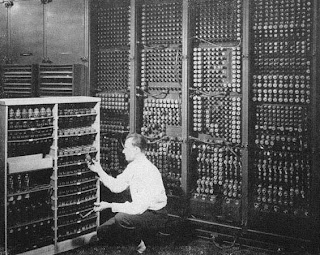
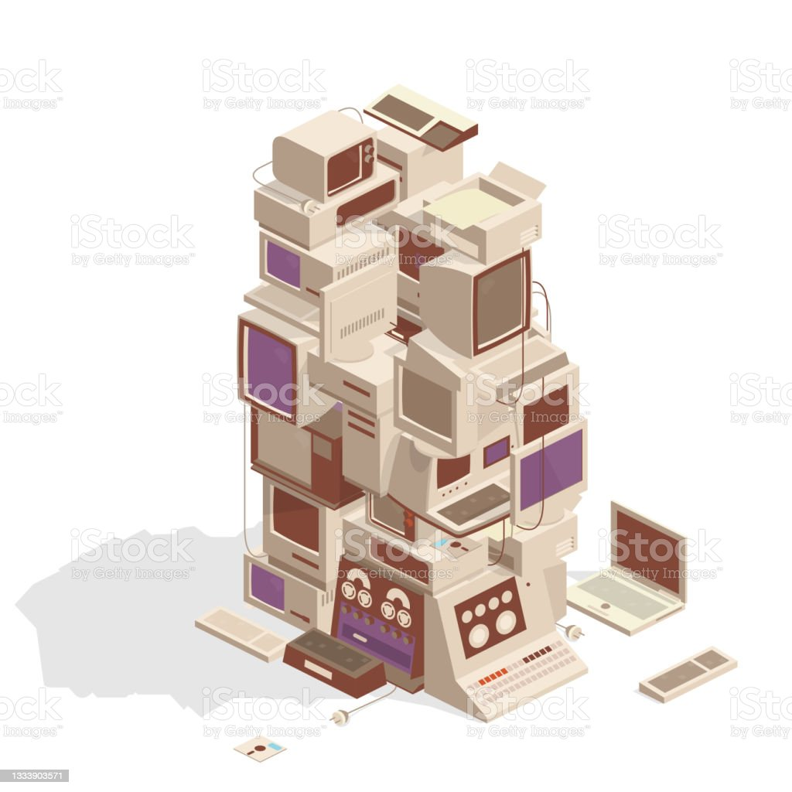

Década de 1950 e 1960
As décadas de 50 e 60 foram marcadas pelos mainframes, grandes computadores que utilizavam diversas válvulas termiônicas para seu funcionamento
Os Primeiros Mainframes
Grandes empresas com grandes necessidades exigiam grandes computadores. As economias de escala também favoreceram sistemas de computador grandes e consolidados.
Essa demanda por grandes computadores, exatamente quando os computadores baseados em transistores de “segunda geração” estavam substituindo as máquinas de tubo de vácuo no final da década de 1950, estimulou o desenvolvimento de hardware e software. Os fabricantes geralmente construíam pequenas quantidades de cada modelo, visando mercados estritamente definidos.
Por que eles são chamados de "Mainframes"?
Ninguém sabe ao certo. Não houve nenhum “inventor” de mainframe que cunhou o termo. Provavelmente, “mainframe” originalmente se referia aos "frames" (projetados para computadores telefônicos) contendo os circuitos do processador, e a memória principal, separados dos racks ou gabinetes contendo outros componentes. Com o tempo, o mainframe passou a significar “computador grande”.
Eletronic Numeric Integrator And Calculator (ENIAC)
Novas Máquinas, Novas Técnicas
Uma fórmula-chave não precisava de um computador: mais hardware significava mais dólares. Assim, os projetistas de computadores exploraram maneiras de aumentar as capacidades, sem aumentar o custo.
Várias inovações permitem que os computadores fiquem mais poderosos sem crescer proporcionalmente. A memória virtual usava armazenamento de sistema relativamente barato para replicar a memória principal mais cara. A microprogramação empregou software com hardware simples para executar comandos que, de outra forma, precisavam de um hardware complexo.
Outras técnicas incluíam pipelining (é uma técnica que permite os processadores executarem tarefas diferentes ao mesmo tempo sendo capazes de respeitar a ordem das instruções que chegam ao processador. Essa técnica aumenta o desempenho do processador e reduz o tempo de execução global de tarefas).
Sobrepondo a execução de instruções que exigiam vários ciclos de processamento e spooling (O Spooling, ou simplesmente Spool do acrônimo "Simultaneous Peripheral Operations On-line", refere-se a um processo de transferência de dados colocando-os em uma área de trabalho temporária onde outro programa pode acessá-lo, para processá-lo em um tempo futuro. O mais comum exemplo de spooling é o da primeira impressão) movendo dados para o armazenamento temporário para uso por outro programa.
